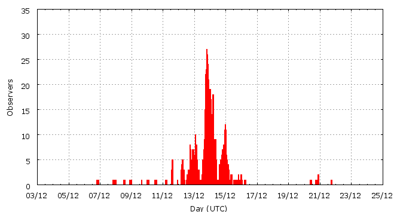

[ www.imo.net ]
This page shows automated results of the Geminids 2009, based on visual observations by volunteers astronomers collected through the report form of the International Meteor Organization (IMO). The information on this page is generated automatically; for scientific use please refer to manual analyses published in scientific journals (such as WGN). Send your feedback regarding this page to Geert Barentsen.
Page contents:
 13-14 December in detail (NEW)
13-14 December in detail (NEW)Page generated: 2010 April 19 at 18:20 UTC.
The graph below shows the ZHR (Zenithal Hourly Rate), which is the number of meteors an observer would see under a very dark sky with the radiant of the shower in zenith.
ZHRmax = 120 based on 13530 Geminids reported in 1393 intervals, assuming population index r = 2.0

| Time (UTC) | Solarlon | nINT | nGEM | ZHR | Number density | |
|---|---|---|---|---|---|---|
| 2009-12-06 21:30 | 254.763 | 2 | 2 | 4 | ±2 | 6 / 109·km3 |
| 2009-12-08 07:47 | 256.213 | 5 | 10 | 7 | ±2 | 11 / 109·km3 |
| 2009-12-09 03:10 | 257.034 | 4 | 11 | 6 | ±2 | 10 / 109·km3 |
| 2009-12-10 09:37 | 258.322 | 6 | 14 | 7 | ±2 | 11 / 109·km3 |
| 2009-12-11 13:05 | 259.485 | 17 | 18 | 8 | ±2 | 13 / 109·km3 |
| 2009-12-12 15:21 | 260.598 | 70 | 255 | 23 | ±1 | 37 / 109·km3 |
| 2009-12-12 23:32 | 260.945 | 40 | 260 | 72 | ±4 | 115 / 109·km3 |
| 2009-12-13 01:45 | 261.039 | 19 | 258 | 80 | ±5 | 127 / 109·km3 |
| 2009-12-13 02:39 | 261.077 | 33 | 340 | 66 | ±4 | 105 / 109·km3 |
| 2009-12-13 04:09 | 261.141 | 33 | 257 | 67 | ±4 | 107 / 109·km3 |
| 2009-12-13 09:20 | 261.360 | 38 | 261 | 65 | ±4 | 104 / 109·km3 |
| 2009-12-13 16:23 | 261.659 | 23 | 259 | 120 | ±7 | 191 / 109·km3 |
| 2009-12-13 17:47 | 261.718 | 34 | 360 | 103 | ±5 | 164 / 109·km3 |
| 2009-12-13 18:49 | 261.762 | 29 | 292 | 107 | ±6 | 170 / 109·km3 |
| 2009-12-13 19:42 | 261.800 | 85 | 620 | 105 | ±4 | 167 / 109·km3 |
| 2009-12-13 20:43 | 261.843 | 69 | 571 | 91 | ±4 | 145 / 109·km3 |
| 2009-12-13 21:45 | 261.886 | 77 | 833 | 106 | ±4 | 169 / 109·km3 |
| 2009-12-13 22:43 | 261.928 | 66 | 717 | 104 | ±4 | 166 / 109·km3 |
| 2009-12-13 23:44 | 261.971 | 65 | 824 | 106 | ±4 | 169 / 109·km3 |
| 2009-12-14 00:44 | 262.013 | 75 | 1117 | 113 | ±3 | 180 / 109·km3 |
| 2009-12-14 01:40 | 262.052 | 67 | 1033 | 115 | ±4 | 183 / 109·km3 |
| 2009-12-14 02:43 | 262.097 | 43 | 674 | 108 | ±4 | 172 / 109·km3 |
| 2009-12-14 03:46 | 262.142 | 41 | 561 | 108 | ±5 | 172 / 109·km3 |
| 2009-12-14 04:44 | 262.183 | 50 | 714 | 104 | ±4 | 166 / 109·km3 |
| 2009-12-14 05:43 | 262.224 | 49 | 531 | 98 | ±4 | 156 / 109·km3 |
| 2009-12-14 06:45 | 262.268 | 33 | 261 | 91 | ±6 | 145 / 109·km3 |
| 2009-12-14 08:08 | 262.327 | 21 | 257 | 90 | ±6 | 143 / 109·km3 |
| 2009-12-14 09:06 | 262.368 | 18 | 256 | 92 | ±6 | 147 / 109·km3 |
| 2009-12-14 10:50 | 262.441 | 19 | 258 | 89 | ±6 | 142 / 109·km3 |
| 2009-12-14 15:52 | 262.655 | 23 | 250 | 100 | ±6 | 159 / 109·km3 |
| 2009-12-14 19:02 | 262.789 | 28 | 259 | 96 | ±6 | 153 / 109·km3 |
| 2009-12-14 21:12 | 262.881 | 30 | 251 | 60 | ±4 | 96 / 109·km3 |
| 2009-12-14 22:51 | 262.950 | 37 | 257 | 31 | ±2 | 49 / 109·km3 |
| 2009-12-15 00:10 | 263.006 | 42 | 250 | 25 | ±2 | 40 / 109·km3 |
| 2009-12-15 02:22 | 263.100 | 28 | 267 | 35 | ±2 | 56 / 109·km3 |
| 2009-12-15 17:45 | 263.752 | 64 | 165 | 16 | ±1 | 25 / 109·km3 |
| 2009-12-16 06:07 | 264.276 | 1 | 3 | 10 | ±5 | 16 / 109·km3 |
| 2009-12-20 17:46 | 268.843 | 8 | 4 | 1 | ±0 | 2 / 109·km3 |
| 2009-12-21 18:07 | 269.876 | 1 | 0 | 30 | ±30 | 48 / 109·km3 |
The reported intervals are automatically added together into the bins shown above, based on the number of meteors and the distribution of the intervals. For each bin, the following parameters are computed:

| Time (UTC) | Solarlon | nINT | nGEM | ZHR | Number density | |
|---|---|---|---|---|---|---|
| 2009-12-13 00:24 | 260.982 | 12 | 149 | 83 | ±7 | 132 / 109·km3 |
| 2009-12-13 01:26 | 261.026 | 9 | 144 | 82 | ±7 | 131 / 109·km3 |
| 2009-12-13 02:06 | 261.054 | 14 | 157 | 78 | ±6 | 124 / 109·km3 |
| 2009-12-13 02:29 | 261.070 | 16 | 143 | 66 | ±6 | 105 / 109·km3 |
| 2009-12-13 02:57 | 261.090 | 13 | 146 | 64 | ±5 | 102 / 109·km3 |
| 2009-12-13 03:41 | 261.121 | 19 | 140 | 69 | ±6 | 110 / 109·km3 |
| 2009-12-13 04:50 | 261.169 | 19 | 149 | 62 | ±5 | 99 / 109·km3 |
| 2009-12-13 07:33 | 261.284 | 24 | 148 | 57 | ±5 | 91 / 109·km3 |
| 2009-12-13 15:29 | 261.621 | 16 | 151 | 105 | ±9 | 167 / 109·km3 |
| 2009-12-13 16:26 | 261.661 | 14 | 141 | 119 | ±10 | 190 / 109·km3 |
| 2009-12-13 17:19 | 261.699 | 11 | 145 | 108 | ±9 | 172 / 109·km3 |
| 2009-12-13 17:46 | 261.717 | 19 | 169 | 106 | ±8 | 169 / 109·km3 |
| 2009-12-13 18:07 | 261.733 | 14 | 153 | 101 | ±8 | 161 / 109·km3 |
| 2009-12-13 18:37 | 261.754 | 14 | 140 | 109 | ±9 | 174 / 109·km3 |
| 2009-12-13 19:06 | 261.774 | 15 | 141 | 113 | ±9 | 180 / 109·km3 |
| 2009-12-13 19:23 | 261.787 | 28 | 184 | 95 | ±7 | 151 / 109·km3 |
| 2009-12-13 19:43 | 261.801 | 31 | 244 | 107 | ±7 | 170 / 109·km3 |
| 2009-12-13 20:03 | 261.814 | 25 | 178 | 111 | ±8 | 177 / 109·km3 |
| 2009-12-13 20:23 | 261.828 | 24 | 164 | 88 | ±7 | 140 / 109·km3 |
| 2009-12-13 20:43 | 261.843 | 22 | 157 | 77 | ±6 | 123 / 109·km3 |
| 2009-12-13 21:04 | 261.858 | 23 | 250 | 107 | ±7 | 170 / 109·km3 |
| 2009-12-13 21:24 | 261.872 | 22 | 244 | 99 | ±6 | 158 / 109·km3 |
| 2009-12-13 21:43 | 261.885 | 29 | 309 | 113 | ±6 | 180 / 109·km3 |
| 2009-12-13 22:04 | 261.900 | 26 | 280 | 104 | ±6 | 166 / 109·km3 |
| 2009-12-13 22:23 | 261.913 | 23 | 235 | 99 | ±6 | 158 / 109·km3 |
| 2009-12-13 22:42 | 261.927 | 18 | 191 | 101 | ±7 | 161 / 109·km3 |
| 2009-12-13 23:03 | 261.942 | 25 | 291 | 112 | ±7 | 178 / 109·km3 |
| 2009-12-13 23:25 | 261.957 | 21 | 272 | 104 | ±6 | 166 / 109·km3 |
| 2009-12-13 23:43 | 261.970 | 20 | 279 | 117 | ±7 | 186 / 109·km3 |
| 2009-12-14 00:02 | 261.983 | 24 | 273 | 100 | ±6 | 159 / 109·km3 |
| 2009-12-14 00:24 | 261.999 | 26 | 406 | 99 | ±5 | 158 / 109·km3 |
| 2009-12-14 00:45 | 262.013 | 23 | 338 | 113 | ±6 | 180 / 109·km3 |
| 2009-12-14 01:05 | 262.028 | 26 | 373 | 133 | ±7 | 212 / 109·km3 |
| 2009-12-14 01:23 | 262.040 | 29 | 468 | 123 | ±6 | 196 / 109·km3 |
| 2009-12-14 01:43 | 262.054 | 20 | 268 | 112 | ±7 | 178 / 109·km3 |
| 2009-12-14 02:04 | 262.070 | 18 | 297 | 106 | ±6 | 169 / 109·km3 |
| 2009-12-14 02:23 | 262.083 | 13 | 241 | 139 | ±9 | 221 / 109·km3 |
| 2009-12-14 02:44 | 262.097 | 18 | 264 | 99 | ±6 | 158 / 109·km3 |
| 2009-12-14 03:04 | 262.112 | 12 | 169 | 95 | ±7 | 151 / 109·km3 |
| 2009-12-14 03:26 | 262.127 | 15 | 150 | 82 | ±7 | 131 / 109·km3 |
| 2009-12-14 03:50 | 262.144 | 14 | 208 | 118 | ±8 | 188 / 109·km3 |
| 2009-12-14 04:08 | 262.157 | 15 | 241 | 122 | ±8 | 194 / 109·km3 |
| 2009-12-14 04:28 | 262.171 | 17 | 231 | 95 | ±6 | 151 / 109·km3 |
| 2009-12-14 04:48 | 262.185 | 16 | 271 | 114 | ±7 | 182 / 109·km3 |
| 2009-12-14 05:08 | 262.199 | 17 | 206 | 105 | ±7 | 167 / 109·km3 |
| 2009-12-14 05:28 | 262.214 | 19 | 209 | 85 | ±6 | 135 / 109·km3 |
| 2009-12-14 05:49 | 262.228 | 16 | 222 | 125 | ±8 | 199 / 109·km3 |
| 2009-12-14 06:11 | 262.244 | 19 | 141 | 84 | ±7 | 134 / 109·km3 |
| 2009-12-14 06:45 | 262.268 | 21 | 144 | 88 | ±7 | 140 / 109·km3 |
| 2009-12-14 07:36 | 262.304 | 14 | 149 | 86 | ±7 | 137 / 109·km3 |
| 2009-12-14 08:22 | 262.336 | 10 | 148 | 95 | ±8 | 151 / 109·km3 |
| 2009-12-14 08:50 | 262.356 | 10 | 159 | 103 | ±8 | 164 / 109·km3 |
| 2009-12-14 09:20 | 262.378 | 11 | 141 | 86 | ±7 | 137 / 109·km3 |
| 2009-12-14 10:05 | 262.409 | 11 | 146 | 81 | ±7 | 129 / 109·km3 |
| 2009-12-14 12:21 | 262.505 | 11 | 140 | 108 | ±9 | 172 / 109·km3 |
| 2009-12-14 15:32 | 262.640 | 12 | 146 | 92 | ±8 | 147 / 109·km3 |
| 2009-12-14 17:29 | 262.723 | 19 | 140 | 103 | ±9 | 164 / 109·km3 |
| 2009-12-14 19:18 | 262.800 | 14 | 140 | 121 | ±10 | 193 / 109·km3 |
| 2009-12-14 20:14 | 262.840 | 12 | 147 | 87 | ±7 | 139 / 109·km3 |
| 2009-12-14 21:20 | 262.887 | 17 | 142 | 54 | ±5 | 86 / 109·km3 |
| 2009-12-14 22:28 | 262.934 | 26 | 141 | 28 | ±2 | 45 / 109·km3 |
| 2009-12-14 23:13 | 262.966 | 17 | 140 | 33 | ±3 | 53 / 109·km3 |
| 2009-12-14 23:46 | 262.989 | 17 | 120 | 29 | ±3 | 46 / 109·km3 |
Data has been received from 97 observers in 26 countries. Thank you for your efforts!
Note: click on the map for an interactive version.

| Observer | Country | Teff | nGEM |
|---|---|---|---|
| Salvador Aguirre | Mexico | 12.25h | 294 |
| Alexandre Amorim | Brazil | 7.64h | 72 |
| Ankit Anand | India | 3.56h | 87 |
| Jure Atanackov | Slovenia | 4.80h | 376 |
| Sachin Bahmba | India | 2.45h | 243 |
| Ricardas Balciunas | Lithuania | 3.75h | 63 |
| Rafael G. Barrios B. | Venezuela | 4.50h | 283 |
| Felix Bettonvil | Netherlands | 1.59h | 107 |
| Gennadij Bugarevych | Belarus | 6.58h | 266 |
| Jose Carlos Millan | Spain | 1.79h | 52 |
| Simiao Cheng | China | 1.52h | 15 |
| Sherry Chhabra | India | 5.40h | 104 |
| Akhil Chopra | India | 2.25h | 162 |
| Tom Corstjens | Belgium | 2.70h | 56 |
| Orley Cruz | Cuba | 2.79h | 137 |
| Mayuresh Desai | India | 2.00h | 68 |
| Peter Detterline | United States | 3.88h | 50 |
| Karel Dewaele | Belgium | 1.69h | 121 |
| Suraj Dhiwar | India | 4.51h | 79 |
| Sietse Dijkstra | Netherlands | 13.25h | 471 |
| Onkar Dixit | India | 1.93h | 112 |
| Shulamit Dror | Israel | 1.78h | 201 |
| Sergey Dobrowsky | Belarus | 1.00h | 6 |
| Shlomi Eini | Israel | 5.38h | 402 |
| Craig Ewing | United States | 3.80h | 172 |
| Mario Fernández Palos | Spain | 1.23h | 30 |
| Christoph Gerber | Germany | 1.75h | 54 |
| Wei Ge | China | 5.00h | 164 |
| William Godley | United States | 3.33h | 22 |
| Jesus Guerrero | Venezuela | 4.50h | 106 |
| Shy Halatzi | Israel | 2.50h | 273 |
| Wayne T. Hally | United States | 4.20h | 37 |
| Vilem Heblik | Czech Republic | 1.25h | 5 |
| Ken Hodonsky | United States | 2.69h | 170 |
| Nick Horn | United States | 1.00h | 25 |
| Petr Horalek | Czech Republic | 1.32h | 22 |
| Lars Jacobs | Belgium | 1.44h | 48 |
| Jeremy Jefferis | United States | 0.25h | 1 |
| Carl Johannink | Netherlands | 1.98h | 70 |
| Javor Kac | Slovenia | 10.15h | 309 |
| Shantanu Karlekar | India | 2.77h | 31 |
| Roy Keeris | Netherlands | 11.72h | 518 |
| Lance Kelly | Australia | 5.00h | 20 |
| Lance Kelly | Australia | 0.50h | 1 |
| Roman Kostenko | Ukraine | 0.92h | 19 |
| Jakub Koukal | Czech Republic | 25.33h | 933 |
| Ashish Kumbhar | India | 2.72h | 23 |
| Adrian Lelyen | Cuba | 2.88h | 84 |
| Peter Van Leuteren | Netherlands | 15.08h | 792 |
| Anna S. Levina | Israel | 11.47h | 733 |
| Mike Linnolt | United States | 1.60h | 13 |
| Xin Li | China | 1.00h | 41 |
| Yuanjing Li | China | 1.41h | 18 |
| Jer Nan Lou | Taiwan | 0.20h | 8 |
| Qiang Ma | China | 1.33h | 65 |
| Adam Marsh | Australia | 18.98h | 190 |
| Mikhail Maslov | Russia | 3.75h | 57 |
| Bruce Mccurdy | Canada | 4.00h | 116 |
| Marco Micheli | Italy | 2.63h | 45 |
| Eugene Miller | United States | 0.72h | 6 |
| Koen Miskotte | Netherlands | 14.45h | 943 |
| Sirko Molau | Germany | 1.70h | 25 |
| Tohar Mor | Israel | 2.32h | 107 |
| Sargam Mulay | India | 5.39h | 72 |
| Francisco Ocana Gonzalez | Spain | 1.45h | 47 |
| Daniel Van Os | Netherlands | 0.50h | 22 |
| Rishikesh Pandit | India | 0.66h | 27 |
| Shyamal Patel | India | 1.00h | 12 |
| Justin Pierce | United States | 1.00h | 3 |
| Andrew Pignoli | United States | 1.17h | 4 |
| Rok Pucer | Slovenia | 1.85h | 21 |
| Ella Ratz | Israel | 5.60h | 269 |
| Jurgen Rendtel | Germany | 11.48h | 56 |
| Alex Scholten | unknown | 2.85h | 89 |
| Sanket Sen | India | 5.15h | 88 |
| Rohan Shewale | India | 2.00h | 46 |
| Phil Snelling | Australia | 2.5h | 6 |
| Sueli Sousa Sepetiba | Brazil | 1.85h | 13 |
| Sergey Stariy | Ukraine | 0.64h | 6 |
| Con Stoitsis | Australia | 2.00h | 19 |
| Wesley Stone | United States | 2.93h | 176 |
| Richard Taibi | United States | 4.33h | 44 |
| Rafael Ruben Torregrosa Soler | Spain | 0.50h | 2 |
| Shigeo Uchiyama | Japan | 3.67h | 138 |
| Daniel Van Os | Netherlands | 1.50h | 12 |
| Hendrik Vandenbruaene | Belgium | 5.34h | 277 |
| Michel Vandeputte | Belgium | 16.11h | 1203 |
| Daniel Verde Van Ouytsel | Spain | 0.58h | 21 |
| Daniel Verde Van Ouytsel | Spain | 2.30h | 19 |
| Jan Verfl | Czech Republic | 1.87h | 175 |
| Anahí Villalba Pradas | Spain | 1.45h | 27 |
| Bin Wang | China | 0.52h | 23 |
| Liyang Wang | China | 2.32h | 51 |
| William Watson | United States | 2.64h | 112 |
| Thomas Weiland | Austria | 3.59h | 97 |
| Xijun Wu | China | 4.36h | 138 |
| Oleg Yavorsky | Russia | 2.54h | 121 |
| Kai Yu | China | 0.64h | 3 |
| Weizhou Zeng | China | 8.49h | 396 |
| Xiang Zhan | China | 3.13h | 164 |
Create your own analysis. The files below can be opened using Excel:
gem2009_rate.csv (number of meteors per interval per observer)
gem2009_magn.csv (number of meteors per magnitude bin per observer)
The information on this page may be distributed freely provided credit is given to the International Meteor Organization (IMO) and, when possible, to the individual observers. The computer facilities to generate this page are provided by the Urania Public Observatory in Belgium and Armagh Observatory in Northern Ireland.
References: